(01) Parcel: erode#
Motivation: Explore ways to erode parcellation. I used radius='infer' in fitting the parcellation. For the actual results, I will take the actual brain object and apply a radius='boundary' erosion before extractign functional signals.
Show code cell source
# HIDE CODE
import os
import sys
from pprint import pprint
from copy import deepcopy as dc
from os.path import join as pjoin
from scipy.ndimage import gaussian_filter
from IPython.display import display, IFrame, HTML
# tmp & extras dir
git_dir = pjoin(os.environ['HOME'], 'Dropbox/git')
extras_dir = pjoin(git_dir, 'jb-Ca-fMRI/_extras')
fig_base_dir = pjoin(git_dir, 'jb-Ca-fMRI/figs')
tmp_dir = pjoin(git_dir, 'jb-Ca-fMRI/tmp')
# GitHub
sys.path.insert(0, pjoin(git_dir, '_Ca-fMRI'))
from figures.fighelper import *
from analysis.final import *
from utils.render import *
# warnings, tqdm, & style
warnings.filterwarnings('ignore', category=DeprecationWarning)
from tqdm.notebook import tqdm
%matplotlib inline
set_style()
Explore Erode#
mice = Mice(Config(128, resolution=25), load_parcel=True)
ROI lookup not found, time to run organize_func() . . .
combine metadata not found, time to run cat_data() . . .
from register.parcellation import erode_parcellation, infer_radius
x = mice.parcel['brain'].copy()
%%time
ids = unique_idxs(x)
len(ids)
CPU times: user 1.62 s, sys: 601 ms, total: 2.22 s
Wall time: 2.22 s
2782
%%time
infer_radius(x)
CPU times: user 2.77 s, sys: 2.81 s, total: 5.58 s
Wall time: 6.26 s
11.151836478762565
plt.imshow(mwh(x[300] == 0, x[300]), cmap='Spectral_r');
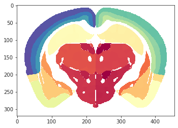
%%time
x_er, radius = erode_parcellation(x, radius='boundary')
x_er.shape, radius
CPU times: user 31.2 s, sys: 4.88 s, total: 36.1 s
Wall time: 35.7 s
((528, 320, 456), 'boundary')
cmap = sns.color_palette('Spectral_r', as_cmap=True)
x2p = x[300].copy()
x2p_er = x_er[300].copy()
for i_new, i in enumerate(np.unique(x2p[x2p.nonzero()])):
x2p[x2p == i] = i_new + 1
x2p_er[x2p_er == i] = i_new + 1
fig, axes = create_figure(1, 2, (11, 4), 'all', 'all', constrained_layout=True)
axes[0].imshow(mwh(x2p == 0, x2p), cmap=cmap)
axes[1].imshow(mwh(x2p_er == 0, x2p_er), cmap=cmap);
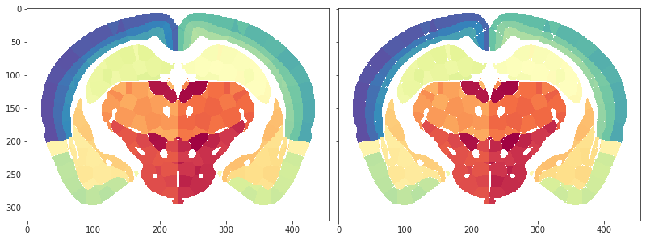
%%time
x_er, radius = erode_parcellation(x, radius='infer')
x_er.shape, radius
CPU times: user 16 s, sys: 7.1 s, total: 23.2 s
Wall time: 23.7 s
((528, 320, 456), 11.151836478762565)
cmap = sns.color_palette('Spectral_r', as_cmap=True)
x2p = x[300].copy()
x2p_er = x_er[300].copy()
for i_new, i in enumerate(np.unique(x2p[x2p.nonzero()])):
x2p[x2p == i] = i_new + 1
x2p_er[x2p_er == i] = i_new + 1
fig, axes = create_figure(1, 2, (11, 4), 'all', 'all', constrained_layout=True)
axes[0].imshow(mwh(x2p == 0, x2p), cmap=cmap)
axes[1].imshow(mwh(x2p_er == 0, x2p_er), cmap=cmap);
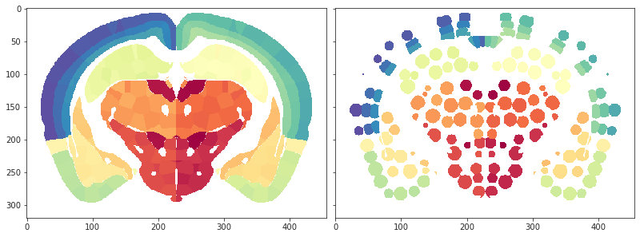
regions = np.unique(x_er[x_er.nonzero()])
len(regions), len(mice.parcel.df)
(2782, 2782)
self = mice.parcel
eroded = np.zeros_like(self['brain'])
eroded.shape
(528, 320, 456)
%%time
radii = {}
for acro in self.df['acro'].unique():
df = self.df.loc[self.df['acro'] == acro]
if acro == 'Isocortex':
for layer in range(self.cfg.ll):
ids = df.loc[
df['layer'] == layer,
'id',
].values
x = self['cortex'].copy()
m = np.isin(x, ids)
x[~m] = 0
x_er, radius = erode_parcellation(x, 'infer')
radii[f"{acro}-{layer}"] = radius
eroded[m] = x_er[m]
else:
ids = df['id'].values
x = self['subcortex'].copy()
m = np.isin(x, ids)
x[~m] = 0
x_er, radius = erode_parcellation(x, 'infer')
radii[acro] = radius
eroded[m] = x_er[m]
CPU times: user 1min 54s, sys: 1min 27s, total: 3min 22s
Wall time: 3min 27s
radii
{ 'Isocortex-0': 9.92442300129975, 'Isocortex-1': 8.887676213336382, 'Isocortex-2': 7.414800667454122, 'OLF': 11.256438987618681, 'HIP': 10.999789811131055, 'RHP': 11.161067901238164, 'CTXsp': 11.702355261454954, 'STR': 11.263642126565298, 'PAL': 10.855727806576645, 'TH': 11.292224871973628, 'HY': 11.538663267336496, 'MB': 11.651804134407957, 'P': 11.640668327352545, 'MY': 11.715973056357198, 'CB': 11.385943590169436 }
cmap = sns.color_palette('Spectral_r', as_cmap=True)
x2p = self['brain'][300].copy()
x2p_er = eroded[300].copy()
for i_new, i in enumerate(np.unique(x2p[x2p.nonzero()])):
x2p[x2p == i] = i_new + 1
x2p_er[x2p_er == i] = i_new + 1
fig, axes = create_figure(1, 2, (11, 4), 'all', 'all', constrained_layout=True)
axes[0].imshow(mwh(x2p == 0, x2p), cmap=cmap)
axes[1].imshow(mwh(x2p_er == 0, x2p_er), cmap=cmap);
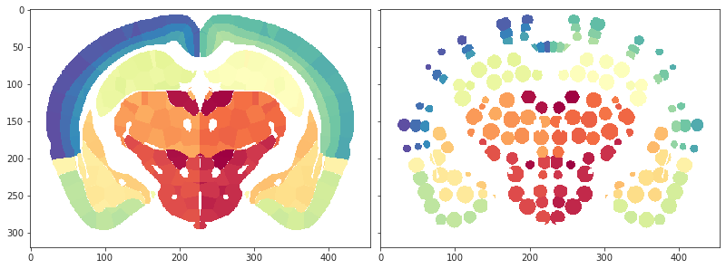
regions_final = np.unique(eroded[eroded.nonzero()])
len(regions_final), len(self.df)
(2782, 2782)
regions_final = np.unique(eroded[eroded.nonzero()])
len(regions_final), len(self.df)
(2782, 2782)
cmap = sns.color_palette('Spectral_r', as_cmap=True)
x2p = self['brain'][:, 100].T.copy()
x2p_er = eroded[:, 100].T.copy()
for i_new, i in enumerate(np.unique(x2p[x2p.nonzero()])):
x2p[x2p == i] = i_new + 1
x2p_er[x2p_er == i] = i_new + 1
fig, axes = create_figure(1, 2, (11, 5), 'all', 'all', constrained_layout=True)
axes[0].imshow(mwh(x2p == 0, x2p), cmap=cmap)
axes[1].imshow(mwh(x2p_er == 0, x2p_er), cmap=cmap);
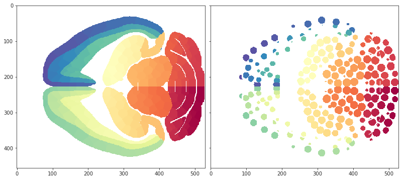
cmap = sns.color_palette('Spectral_r', as_cmap=True)
x2p = self['brain'][..., 200].T.copy()
x2p_er = eroded[..., 200].T.copy()
for i_new, i in enumerate(np.unique(x2p[x2p.nonzero()])):
x2p[x2p == i] = i_new + 1
x2p_er[x2p_er == i] = i_new + 1
fig, axes = create_figure(1, 2, (11, 5), 'all', 'all', constrained_layout=True)
axes[0].imshow(mwh(x2p == 0, x2p), cmap=cmap)
axes[1].imshow(mwh(x2p_er == 0, x2p_er), cmap=cmap);
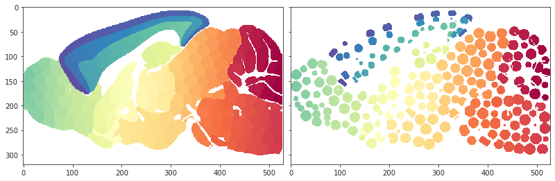
eroded.dtype
dtype('uint32')
eroded.shape
(528, 320, 456)
from register.register import Register
reg = Register(mice)
reg.mi_base = ants.image_mutual_information(
image1=reg.template, image2=reg.template)
tx_fwd, tx_aff = reg.load_tx(reg.in_house_name, is_inv=False)
tx_inv, _ = reg.load_tx(reg.in_house_name, is_inv=True)
tx = {'fwdtransforms': tx_fwd, 'invtransforms': tx_inv}
tx_aff_inv = tx_aff.invert()
affined = tx_aff.apply_to_image(
image=reg.in_house,
reference=reg.template,
interpolation='linear',
)
obj = ants.apply_transforms(
fixed=affined,
moving=reg.img_in_ccf(eroded),
transformlist=tx['invtransforms'],
interpolator='genericLabel',
)
obj = tx_aff_inv.apply_to_image(
image=obj,
reference=reg.in_house,
interpolation='multilabel',
)
obj = obj.numpy()
#for i_new, i in enumerate(np.unique(obj[obj.nonzero()])):
# obj[obj == i] = i_new + 1
obj.shape
(81, 46, 60)
fig, axes = create_figure(1, 2, (13, 5), constrained_layout=True)
s_ = 37
for ax in axes.flat:
ax.imshow(reg.in_house[s_], cmap='Greys_r')
axes[1].imshow(mwh(obj[s_] == 0, obj[s_]), alpha=1, cmap='Spectral_r')
plt.show()
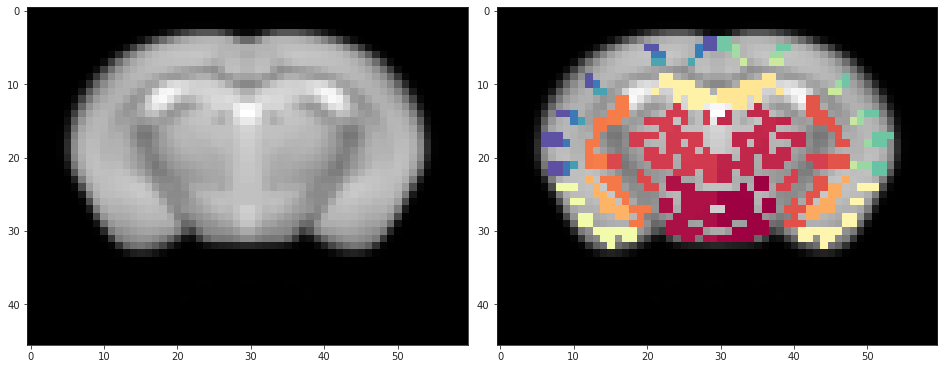
size = unique_idxs(obj.astype('uint32'))
size = {i: len(v) for i, v in size.items()}
len(size)
2756
diff = sorted(set(mice.parcel.df['id'].unique()) - set(size))
len(diff)
26
mice.parcel(2)
{'id': 2, 'acro': 'Isocortex', 'hemis': 1, 'region': 2, 'layer': 0}
diff[0]
128
mice.parcel.df.loc[mice.parcel.df['id'].isin(diff)]
| id | acro | hemis | region | layer | |
|---|---|---|---|---|---|
| 127 | 128 | Isocortex | 1 | 128 | 0 |
| 257 | 258 | Isocortex | 1 | 2 | 2 |
| 258 | 259 | Isocortex | 1 | 3 | 2 |
| 259 | 260 | Isocortex | 1 | 4 | 2 |
| 263 | 264 | Isocortex | 1 | 8 | 2 |
| 265 | 266 | Isocortex | 1 | 10 | 2 |
| 344 | 345 | Isocortex | 1 | 89 | 2 |
| 345 | 346 | Isocortex | 1 | 90 | 2 |
| 347 | 348 | Isocortex | 1 | 92 | 2 |
| 353 | 354 | Isocortex | 1 | 98 | 2 |
| 361 | 362 | Isocortex | 1 | 106 | 2 |
| 370 | 371 | Isocortex | 1 | 115 | 2 |
| 511 | 512 | Isocortex | 2 | 128 | 0 |
| 592 | 593 | Isocortex | 2 | 81 | 1 |
| 641 | 642 | Isocortex | 2 | 2 | 2 |
| 643 | 644 | Isocortex | 2 | 4 | 2 |
| 647 | 648 | Isocortex | 2 | 8 | 2 |
| 649 | 650 | Isocortex | 2 | 10 | 2 |
| 670 | 671 | Isocortex | 2 | 31 | 2 |
| 728 | 729 | Isocortex | 2 | 89 | 2 |
| 729 | 730 | Isocortex | 2 | 90 | 2 |
| 731 | 732 | Isocortex | 2 | 92 | 2 |
| 734 | 735 | Isocortex | 2 | 95 | 2 |
| 737 | 738 | Isocortex | 2 | 98 | 2 |
| 745 | 746 | Isocortex | 2 | 106 | 2 |
| 754 | 755 | Isocortex | 2 | 115 | 2 |
diff_sym = mice.parcel.complement(diff)
len(diff_sym)
30
mice.parcel.df.loc[mice.parcel.df['id'].isin(diff_sym)]
| id | acro | hemis | region | layer | |
|---|---|---|---|---|---|
| 127 | 128 | Isocortex | 1 | 128 | 0 |
| 208 | 209 | Isocortex | 1 | 81 | 1 |
| 257 | 258 | Isocortex | 1 | 2 | 2 |
| 258 | 259 | Isocortex | 1 | 3 | 2 |
| 259 | 260 | Isocortex | 1 | 4 | 2 |
| 263 | 264 | Isocortex | 1 | 8 | 2 |
| 265 | 266 | Isocortex | 1 | 10 | 2 |
| 286 | 287 | Isocortex | 1 | 31 | 2 |
| 344 | 345 | Isocortex | 1 | 89 | 2 |
| 345 | 346 | Isocortex | 1 | 90 | 2 |
| 347 | 348 | Isocortex | 1 | 92 | 2 |
| 350 | 351 | Isocortex | 1 | 95 | 2 |
| 353 | 354 | Isocortex | 1 | 98 | 2 |
| 361 | 362 | Isocortex | 1 | 106 | 2 |
| 370 | 371 | Isocortex | 1 | 115 | 2 |
| 511 | 512 | Isocortex | 2 | 128 | 0 |
| 592 | 593 | Isocortex | 2 | 81 | 1 |
| 641 | 642 | Isocortex | 2 | 2 | 2 |
| 642 | 643 | Isocortex | 2 | 3 | 2 |
| 643 | 644 | Isocortex | 2 | 4 | 2 |
| 647 | 648 | Isocortex | 2 | 8 | 2 |
| 649 | 650 | Isocortex | 2 | 10 | 2 |
| 670 | 671 | Isocortex | 2 | 31 | 2 |
| 728 | 729 | Isocortex | 2 | 89 | 2 |
| 729 | 730 | Isocortex | 2 | 90 | 2 |
| 731 | 732 | Isocortex | 2 | 92 | 2 |
| 734 | 735 | Isocortex | 2 | 95 | 2 |
| 737 | 738 | Isocortex | 2 | 98 | 2 |
| 745 | 746 | Isocortex | 2 | 106 | 2 |
| 754 | 755 | Isocortex | 2 | 115 | 2 |
Fit new#
mice = Mice(Config(128, resolution=25))
[PROGRESS] 'config.json' saved at /home/hadi/Documents/Ca-fMRI/processed/norm-global_parcel-columnar_n-128*3
ROI lookup not found, time to run organize_func() . . .
combine metadata not found, time to run cat_data() . . .
%%time
mice.parcel.fit_parcel('infer', True)
[PROGRESS] fit columnar: initiated
[PROGRESS] kmeans fit: done
[PROGRESS] save 2D 10um: done
[PROGRESS] 2d --> 3d: done
[PROGRESS] save 3D 10um: done
[PROGRESS] downsample: done
num regions, left: 384, right: 384 region id diff, r - l: Counter({384: 384})
[PROGRESS] fit columnar: done
[PROGRESS] fit subcortical: initiated
[PROGRESS] 'cols_25um.npy' saved at /home/hadi/Documents/Ca-fMRI/processed/norm-global_parcel-columnar_n-128*3/parcellation
[PROGRESS] 'brain_25um.npy' saved at /home/hadi/Documents/Ca-fMRI/processed/norm-global_parcel-columnar_n-128*3/parcellation
[PROGRESS] 'cortex_25um.npy' saved at /home/hadi/Documents/Ca-fMRI/processed/norm-global_parcel-columnar_n-128*3/parcellation
[PROGRESS] 'subcortex_25um.npy' saved at /home/hadi/Documents/Ca-fMRI/processed/norm-global_parcel-columnar_n-128*3/parcellation
[PROGRESS] 'cortex-top_25um.npy' saved at /home/hadi/Documents/Ca-fMRI/processed/norm-global_parcel-columnar_n-128*3/parcellation
[PROGRESS] 'brain-eroded_25um.npy' saved at /home/hadi/Documents/Ca-fMRI/processed/norm-global_parcel-columnar_n-128*3/parcellation
[PROGRESS] 'nonzero-idxs_parcel2d-flat_25um.npy' saved at /home/hadi/Documents/Ca-fMRI/processed/norm-global_parcel-columnar_n-128*3/parcellation
[PROGRESS] 'nonzero-idxs_parcel2d-top_25um.npy' saved at /home/hadi/Documents/Ca-fMRI/processed/norm-global_parcel-columnar_n-128*3/parcellation
[PROGRESS] 'nonzero-idxs_parcel3d_25um.npy' saved at /home/hadi/Documents/Ca-fMRI/processed/norm-global_parcel-columnar_n-128*3/parcellation
[PROGRESS] 'region-idxs_parcel2d-flat_25um.npy' saved at /home/hadi/Documents/Ca-fMRI/processed/norm-global_parcel-columnar_n-128*3/parcellation
[PROGRESS] 'region-idxs_parcel2d-top_25um.npy' saved at /home/hadi/Documents/Ca-fMRI/processed/norm-global_parcel-columnar_n-128*3/parcellation
[PROGRESS] 'region-idxs_parcel3d_25um.npy' saved at /home/hadi/Documents/Ca-fMRI/processed/norm-global_parcel-columnar_n-128*3/parcellation
[PROGRESS] 'shape_parcel2d-flat_25um.npy' saved at /home/hadi/Documents/Ca-fMRI/processed/norm-global_parcel-columnar_n-128*3/parcellation
[PROGRESS] 'shape_parcel2d-top_25um.npy' saved at /home/hadi/Documents/Ca-fMRI/processed/norm-global_parcel-columnar_n-128*3/parcellation
[PROGRESS] 'shape_parcel3d_25um.npy' saved at /home/hadi/Documents/Ca-fMRI/processed/norm-global_parcel-columnar_n-128*3/parcellation
[PROGRESS] 'regions.df' saved at /home/hadi/Documents/Ca-fMRI/processed/norm-global_parcel-columnar_n-128*3/parcellation
[PROGRESS] 'fit_meta.npy' saved at /home/hadi/Documents/Ca-fMRI/processed/norm-global_parcel-columnar_n-128*3/parcellation
[PROGRESS] save results: done.
CPU times: user 1d 12h 16min 55s, sys: 1h 57min 47s, total: 1d 14h 14min 42s
Wall time: 4h 40min 25s
mice = Mice(Config(128, resolution=100))
ROI lookup not found, time to run organize_func() . . .
combine metadata not found, time to run cat_data() . . .
%%time
mice.parcel.fit_parcel('infer', True)
[PROGRESS] fit columnar: initiated
[PROGRESS] downsample: done
num regions, left: 384, right: 384 region id diff, r - l: Counter({384: 384})
[PROGRESS] fit columnar: done
[PROGRESS] fit subcortical: initiated
[PROGRESS] fit subcortical: done
[PROGRESS] create regions df: done
[PROGRESS] 'cols_100um.npy' saved at /home/hadi/Documents/Ca-fMRI/processed/norm-global_parcel-columnar_n-128*3/parcellation
[PROGRESS] 'brain_100um.npy' saved at /home/hadi/Documents/Ca-fMRI/processed/norm-global_parcel-columnar_n-128*3/parcellation
[PROGRESS] 'cortex_100um.npy' saved at /home/hadi/Documents/Ca-fMRI/processed/norm-global_parcel-columnar_n-128*3/parcellation
[PROGRESS] 'subcortex_100um.npy' saved at /home/hadi/Documents/Ca-fMRI/processed/norm-global_parcel-columnar_n-128*3/parcellation
[PROGRESS] 'cortex-top_100um.npy' saved at /home/hadi/Documents/Ca-fMRI/processed/norm-global_parcel-columnar_n-128*3/parcellation
[PROGRESS] 'brain-eroded_100um.npy' saved at /home/hadi/Documents/Ca-fMRI/processed/norm-global_parcel-columnar_n-128*3/parcellation
[PROGRESS] 'nonzero-idxs_parcel2d-flat_100um.npy' saved at /home/hadi/Documents/Ca-fMRI/processed/norm-global_parcel-columnar_n-128*3/parcellation
[PROGRESS] 'nonzero-idxs_parcel2d-top_100um.npy' saved at /home/hadi/Documents/Ca-fMRI/processed/norm-global_parcel-columnar_n-128*3/parcellation
[PROGRESS] 'nonzero-idxs_parcel3d_100um.npy' saved at /home/hadi/Documents/Ca-fMRI/processed/norm-global_parcel-columnar_n-128*3/parcellation
[PROGRESS] 'region-idxs_parcel2d-flat_100um.npy' saved at /home/hadi/Documents/Ca-fMRI/processed/norm-global_parcel-columnar_n-128*3/parcellation
[PROGRESS] 'region-idxs_parcel2d-top_100um.npy' saved at /home/hadi/Documents/Ca-fMRI/processed/norm-global_parcel-columnar_n-128*3/parcellation
[PROGRESS] 'region-idxs_parcel3d_100um.npy' saved at /home/hadi/Documents/Ca-fMRI/processed/norm-global_parcel-columnar_n-128*3/parcellation
[PROGRESS] 'shape_parcel2d-flat_100um.npy' saved at /home/hadi/Documents/Ca-fMRI/processed/norm-global_parcel-columnar_n-128*3/parcellation
[PROGRESS] 'shape_parcel2d-top_100um.npy' saved at /home/hadi/Documents/Ca-fMRI/processed/norm-global_parcel-columnar_n-128*3/parcellation
[PROGRESS] 'shape_parcel3d_100um.npy' saved at /home/hadi/Documents/Ca-fMRI/processed/norm-global_parcel-columnar_n-128*3/parcellation
[PROGRESS] 'regions.df' saved at /home/hadi/Documents/Ca-fMRI/processed/norm-global_parcel-columnar_n-128*3/parcellation
[PROGRESS] 'fit_meta.npy' saved at /home/hadi/Documents/Ca-fMRI/processed/norm-global_parcel-columnar_n-128*3/parcellation
[PROGRESS] save results: done.
CPU times: user 38min 32s, sys: 3min 26s, total: 41min 58s
Wall time: 4min 23s
mice.parcel['eroded-radii']
{ 'Isocortex-0': 2.719102115583514, 'Isocortex-1': 2.233832815502203, 'Isocortex-2': 1.8823941872447283, 'OLF': 2.669839833942877, 'HIP': 2.652555978765983, 'RHP': 2.6140985274298894, 'CTXsp': 2.6638303574795232, 'STR': 2.7045961467468294, 'PAL': 2.543543915675433, 'TH': 2.7392922989650064, 'HY': 2.7331860495012856, 'MB': 2.763917601219168, 'P': 2.7245725993175265, 'MY': 2.7950540439064877, 'CB': 2.678951334283115 }
Look, which one?#
from register.register import Register
mice = Mice(Config(128, resolution=25))
reg = Register(mice)
in_house = reg.load_in_house().numpy()
ROI lookup not found, time to run organize_func() . . .
combine metadata not found, time to run cat_data() . . .
brain = 'Symmetric_N162_space-indiv3d_brain.nii.gz'
brain = ants.image_read(
filename=pjoin(mice.cfg.masks_dir, brain),
pixeltype='unsigned int',
).numpy()
eroded = 'Symmetric_N162_space-indiv3d_brain-eroded.nii.gz'
eroded = ants.image_read(
filename=pjoin(mice.cfg.masks_dir, eroded),
pixeltype='unsigned int',
).numpy()
brain.shape, eroded.shape
((60, 46, 81), (60, 46, 81))
fig, axes = create_figure(1, 2, (13, 7), 'all', 'all', constrained_layout=True)
x2p1 = brain[..., 40].T
x2p2 = eroded[..., 40].T
for ax in axes.flat:
ax.imshow(mwh(in_house[..., 40].T < 4000, in_house[..., 40].T), cmap='Greys_r')
axes[0].imshow(mwh(x2p1 == 0, x2p1), alpha=0.5, cmap='Spectral_r')
axes[1].imshow(mwh(x2p2 == 0, x2p2), alpha=0.5, cmap='Spectral_r')
remove_ticks(axes)
plt.show()
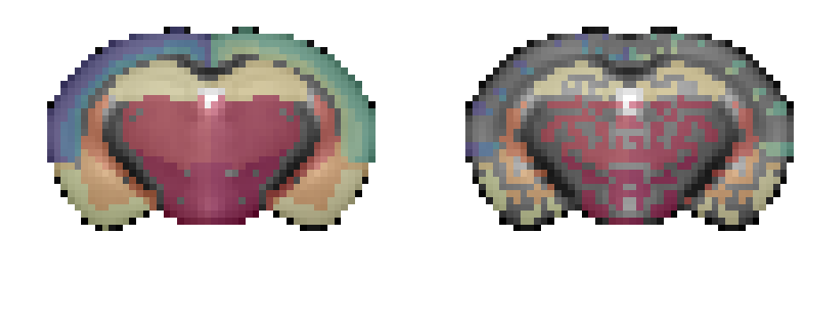
from register.parcellation import erode_parcellation, sp_spat
eroded2, r = erode_parcellation(brain, 'boundary')
eroded2.shape, r
((60, 46, 81), 'boundary')
data2p = filter_boundaries(
x_list=[brain[..., 40].T, eroded[..., 40].T, eroded2[..., 40].T, in_house[..., 40].T],
mask=in_house[..., 40].T > 4000,
)
fig, axes = create_figure(1, 3, (13, 4), 'all', 'all', constrained_layout=True)
for ax in axes.flat:
ax.imshow(mwh(data2p[-1] < 4000, data2p[-1]), cmap='Greys_r')
for i, x2p in enumerate(data2p[:-1]):
axes[i].imshow(mwh(x2p == 0, x2p), alpha=0.5, cmap='Spectral_r')
remove_ticks(axes)
plt.show()
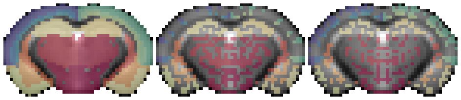
ids_x = list(unique_idxs(eroded2))
len(ids_x)
2700
missing = sorted(set(unique_idxs(brain)) - set(ids_x))
len(missing)
78
m = np.isin(brain, missing)
eroded2[m] = brain[m]
ids_x = list(unique_idxs(eroded2))
len(ids_x)
2778
missing = sorted(set(mice.parcel.df['id']) - set(unique_idxs(brain)))
missing
[258, 362, 642, 746]
data2p = filter_boundaries(
x_list=[brain[..., 40].T, eroded[..., 40].T, eroded2[..., 40].T, in_house[..., 40].T],
mask=in_house[..., 40].T > 4000,
)
fig, axes = create_figure(1, 3, (13, 4), 'all', 'all', constrained_layout=True)
for ax in axes.flat:
ax.imshow(mwh(data2p[-1] < 4000, data2p[-1]), cmap='Greys_r')
for i, x2p in enumerate(data2p[:-1]):
axes[i].imshow(mwh(x2p == 0, x2p), alpha=1, cmap='Spectral_r')
remove_ticks(axes)
plt.show()
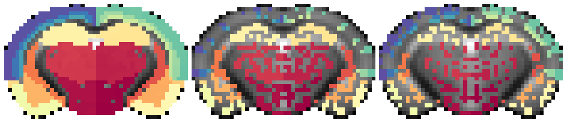
data2p = filter_boundaries(
x_list=[brain[:, 10], eroded[:, 10], eroded2[:, 10], in_house[:, 10]],
mask=in_house[:, 10] > 4000,
)
fig, axes = create_figure(1, 3, (13, 4), 'all', 'all', constrained_layout=True)
for ax in axes.flat:
ax.imshow(mwh(data2p[-1] < 4000, data2p[-1]), cmap='Greys_r')
for i, x2p in enumerate(data2p[:-1]):
axes[i].imshow(mwh(x2p == 0, x2p), alpha=1, cmap='Spectral_r')
remove_ticks(axes)
plt.show()
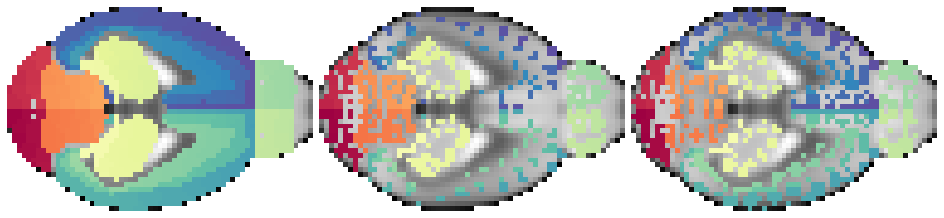
data2p = filter_boundaries(
x_list=[brain[24], eroded[24], eroded2[24], in_house[24]],
mask=in_house[24] > 2000,
)
fig, axes = create_figure(1, 3, (13, 4), 'all', 'all', constrained_layout=True)
for ax in axes.flat:
ax.imshow(mwh(data2p[-1] < 2000, data2p[-1]), cmap='Greys_r')
for i, x2p in enumerate(data2p[:-1]):
axes[i].imshow(mwh(x2p == 0, x2p), alpha=1, cmap='Spectral_r')
remove_ticks(axes)
plt.show()
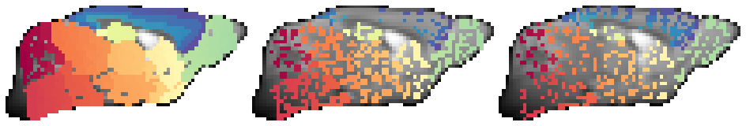
missing = sorted(set(unique_idxs(brain)) - set(unique_idxs(eroded)))
len(missing)
22
m = np.isin(brain, missing)
eroded[m] = brain[m]
sizes_brain = unique_idxs(brain)
sizes_1 = unique_idxs(eroded)
sizes_2 = unique_idxs(eroded2)
sizes_brain = {i: len(v) for i, v in sizes_brain.items()}
sizes_1 = {i: len(v) for i, v in sizes_1.items()}
sizes_2 = {i: len(v) for i, v in sizes_2.items()}
len(sizes_brain), len(sizes_1), len(sizes_2)
(2778, 2778, 2778)
sns.histplot(list(sizes_brain.values()), color='C0', label='brain', bins=np.linspace(0, 50, 51))
sns.histplot(list(sizes_1.values()), color='C1', label='eroded', bins=np.linspace(0, 50, 51))
sns.histplot(list(sizes_2.values()), color='C2', label='eroded 2', bins=np.linspace(0, 50, 51))
plt.legend()
plt.show()
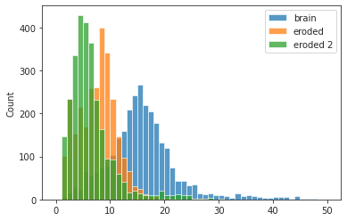